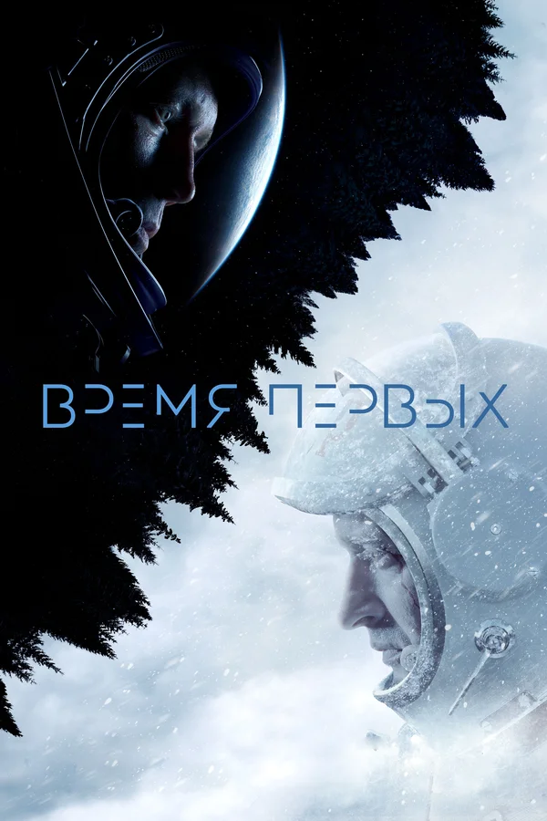

Время первых

7.5
Обзор
1960-е, разгар холодной войны. Две супердержавы СССР и США бьются за
первенство в космической гонке. Пока СССР впереди, на очереди — выход
человека в открытый космос. За две недели до старта взрывается
тестовый корабль. Времени на выявление причин нет. Опытный военный
лётчик Павел Беляев и его напарник Алексей Леонов, необстрелянный и
горячий, мечтающий о подвиге, — два человека, готовые шагнуть в
неизвестность. Но никто не мог даже предположить всего, с чем им
предстояло столкнуться в полёте. В этой миссии всё, что только могло,
пошло не так.